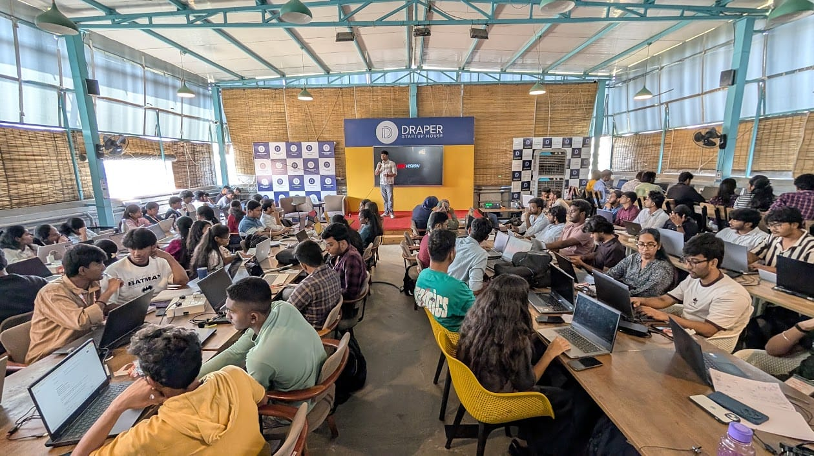
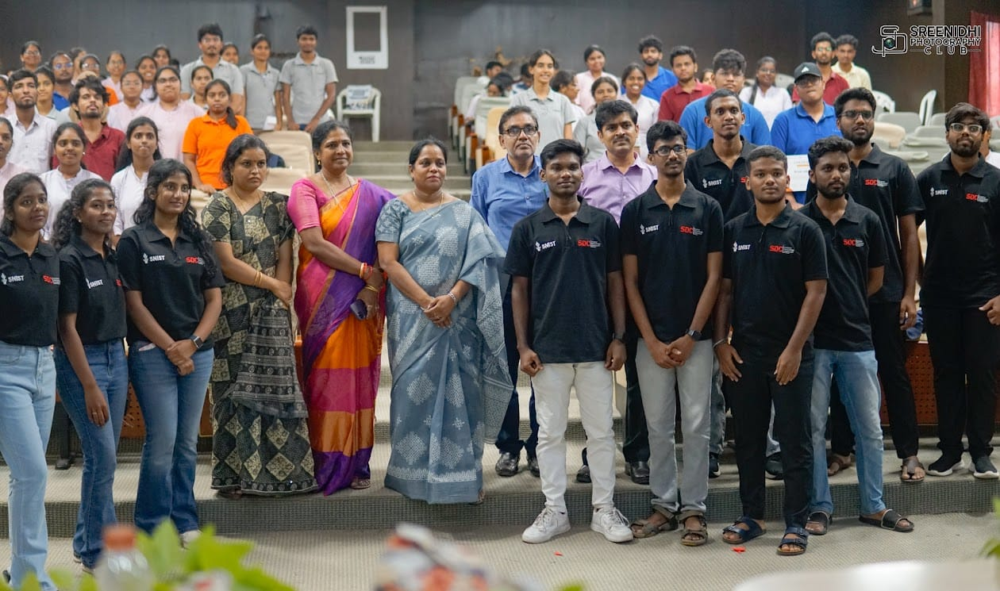

Founder and Vision Behind SDC
Chandrashekhar M, SNIST alumnus (2021–24), built SDC to bridge the gap between academic curriculum and industry expectations — fostering a culture of open learning and mentorship.
● Featured Article
The Student Developers Community (SDC) was established in 2022 at Sreenidhi Institute of Science and Technology. Its aim — to create a space where students grow technically through collaboration and hands-on learning, moving beyond the classroom into real-world technology.

Chandrashekhar M, SNIST alumnus (2021–24), built SDC to bridge the gap between academic curriculum and industry expectations — fostering a culture of open learning and mentorship.

From the SDC Summer Tech Camp and AI Day at Growth Hub to flagship hackathons Hash It Out and UX-Plosion — here's how SDC's events became launchpads for careers.

Once a local initiative at SNIST, SDC has scaled into a nationwide movement. With the launch of SDC SPEC and new chapters, the mission to build India's largest student developer network is underway.

From open-source repos on GitHub to communities on Instagram and LinkedIn — explore how SDC's digital platforms connect 5000+ members nationwide.

Hands-on workshops, industry mentors, national-level event partnerships, and a community that celebrates every win. Here's why joining SDC is an investment in your future.
SDC co-hosted Beyond Tech and AI Workshop sessions at Microsoft, connecting students with industry luminaries and startup founders in a real-world setting.